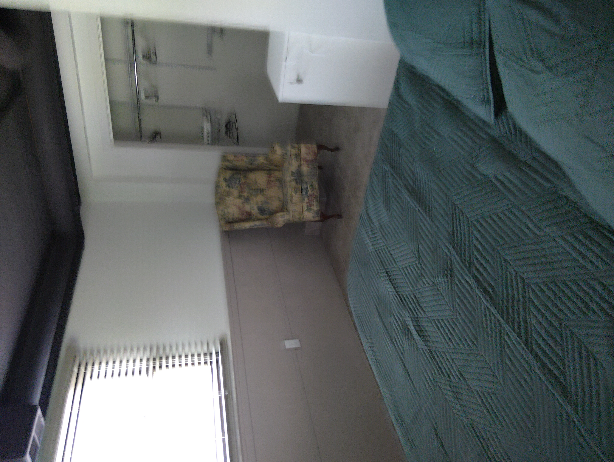
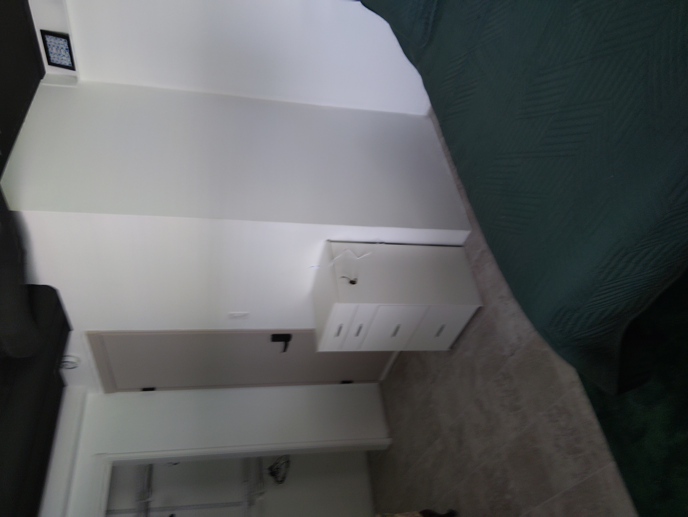
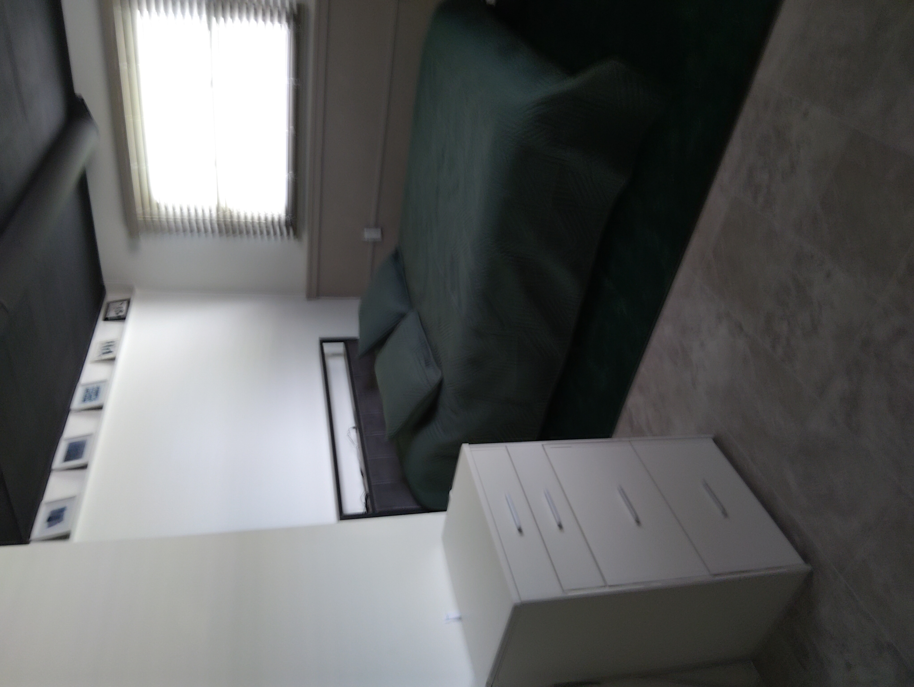
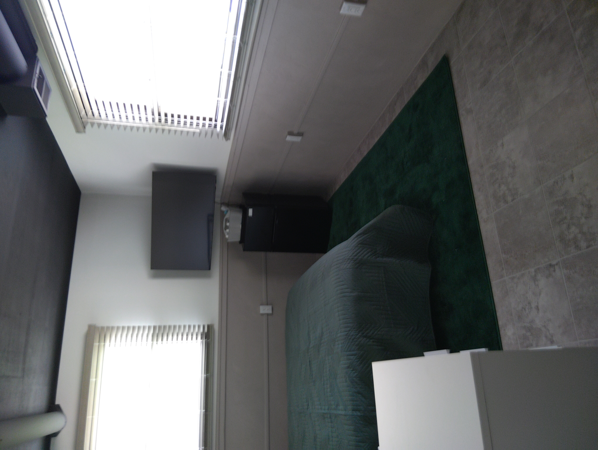

Furnished private room for rent in Valparaiso, Indiana
Need a furnished room soon? Send a tour request and ask what is available now.
Request a TourThe Green Room is a furnished lower-level room with a little extra breathing room, morning light, and a cozy private feel inside the shared home.
Each room includes a firm memory foam queen-sized bed with built-in headboard lighting and convenient power outlets, making it easy to relax, read, or stay connected without extra clutter.
You will have a dedicated laptop desk that can also function as a makeup vanity, along with a well-appointed closet complete with hangers and a laundry basket to keep your space organized.
For everyday convenience, the room also includes a TV, mini fridge, and thoughtful extras like a shower caddy and boot tray — making it easy to move comfortably between your room and the shared spaces.
The Green Room is located on the lower level and faces east to catch the morning sun, offering a cozy, tucked-in feel that works especially well for someone who prefers a quieter, more private space.
This is your personal space within the house: quiet, functional, and intentionally set up so you can settle in quickly and feel at home.
Need a furnished room soon? Send a tour request and ask what is available now.
Request a Tour


